🤖 WRO 2026 · Future Innovators · Elementary
🤖 WRO 2026 · Future Innovators · Elementary
RITMO
"Cada coração, uma história."
A vending machine cultural que usa o ritmo do coração para entregar literatura de cordel — de papel, verso e xilogravura.
ALL MIGHT KIDS · Escola SESI SENAI Parangaba · Fortaleza, CE


